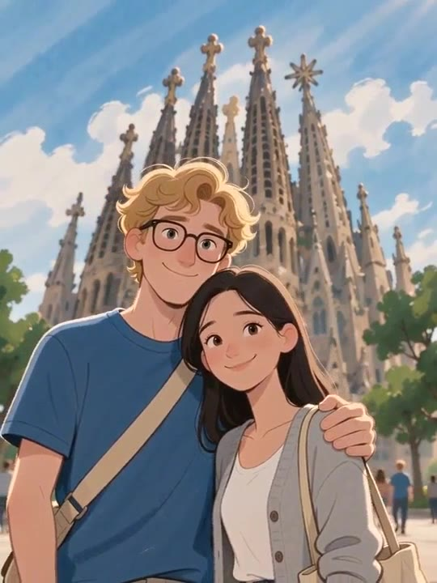
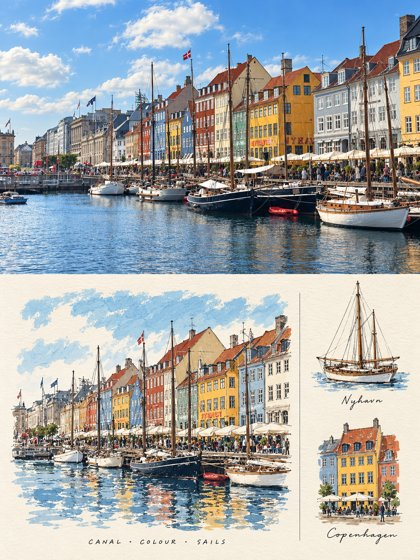
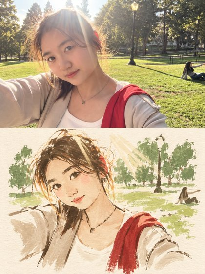
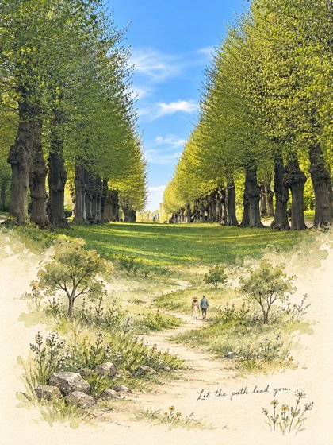
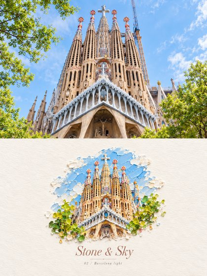

02 / ZOEY PORTFOLIO
A creative lab.
AI experiments, visuals and stories.
62 artworks · 6 styles · 1 filmSelect a cover to open or close its collection.

01 FILMAI Animations
Explore collectionClose collection＋
01 FILM
AI Animations
Explore collectionClose collection＋
20 ARTWORKSWatercolor Postcards
Explore collectionClose collection＋
20 ARTWORKS
Watercolor Postcards
Explore collectionClose collection＋
21 ARTWORKSMinimal Hand-drawn Portraits
Explore collectionClose collection＋

21 ARTWORKS
Minimal Hand-drawn Portraits
Explore collectionClose collection＋
02 ARTWORKSStorybook Worlds
Explore collectionClose collection＋
02 ARTWORKS
Storybook Worlds
Explore collectionClose collection＋
12 ARTWORKSPainted Miniature Worlds
Explore collectionClose collection＋
12 ARTWORKS
Painted Miniature Worlds
Explore collectionClose collection＋03 ARTWORKSGeometric Illustration
Explore collectionClose collection＋
03 ARTWORKS
Geometric Illustration
Explore collectionClose collection＋04 ARTWORKSTorn-Paper Illustration
Explore collectionClose collection＋
04 ARTWORKS
Torn-Paper Illustration
Explore collectionClose collection＋Created with AI from personal photographs. Select an artwork inside a collection to view the artwork.